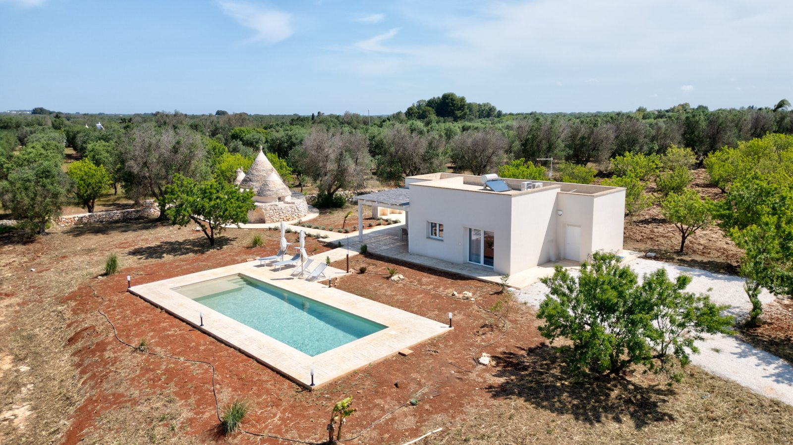

€545.000
Ostuni countryside, Puglia
Open the listingRestored trullo plus lamia with exposed local stone and vaults, a built 10×4 private pool, solarium and BBQ on 12,000 m² of olives — minutes from Ostuni’s white old town.
Good condition with A/C, alarm and satellite wifi. Compact 100 m² interior; the outdoor rooms and olive grove do the heavy lifting.